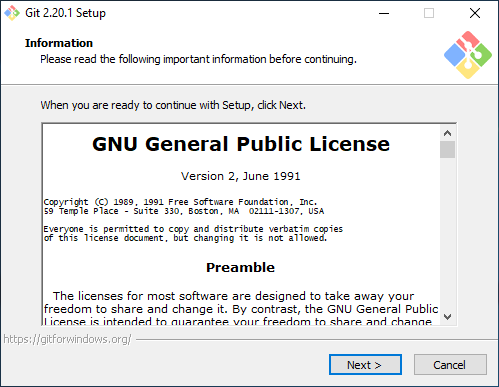

pro vytváření a nastavení lokálního repozitáře
git config --local user.name "IT1810"
git config --local user.email "7cezar97@gmail.cz"
Nastaví uživatelský účet pro lokální repozitář, vhodné když pracuje několik lidí na jednom
účtu(počítači).
git init
Vytvoření lokálního repozitáře (.git).
git --version
Ukáže verzi verzovacího systému Git.
git config --global http.proxy http://192.168.1.1:800
Nastavení procházení Git Bashe přes proxy server(což je pro všechny repozitáře).
git config --global http.sslverify "false"
Zrušení požadování SSL certifikátu pro všechny repozitáře, pokud je vás na jednom účtu více (a nemáte
co uživatel to účet) a nemáte uložený certifikát s vlasním uživatelským profilem.
git config --global user.email "7cezar97@gmail.cz"
git config --global user.name "IT1810"
Nastaví uživatelský účet pro všechny repozitáře, vhodné když pracuje jeden člověk na jednom
účtu(počítači).
pro práci s větvemi
git checkout --orphan vetev
Vytvoří novou větev nezávislou na všech ostatních a přepne se do ní.
git checkout -b vetev
Vytvoří novou větev.
git checkout vetev
Přepne na větev vetev.
git merge vetev
Sloučí větve s větví vetev.
pro práci s lokálním repozitářem
git status
Vypíše co bylo přidané přikazem add.
git add -all
git add .
Přidá všechno do "stage area"(oblast připravená na commit z workdirectory(pracovní složky) ).
git add README.md
Přidá v tomto případě jeden soubor (README.md) do "stage area"
git add *.jpg, *.png
Přidá v tomto případě všechny soubory s připonami .jpg a .png do "stage area"
git reset
Vymaže všechno z "stage area"
git reset *.jpg
Vymaže jenom soubory s připonou .jpg z "stage area".
práce mezi lokálním repozitářem a vzdáleným
git remote add origin https://github.com/IT1810/novy.git
Přidá vzdálený repozitář pod větví origin (běžné pojmenování větve) z učtu na Githubu.
git push -u origin master
Aktualizuje vzdálený repozitář (origin) podle lokálního repozitáře (master).
git push -f origin master
Pokud nastanou nějaké chyby při aktualizaci, tak to zaaranžuje chyby tak, aby jste mohl použit přikaz
push s ostatními( nebo samostatný ).
git pull origin master
Dělá to stejné jako "git push -u origin master, ale naopak."
git log
Vypíše jednotlivé commity, které jste provedli s lokálním repozitářem.
git log --oneline
Vypíše něco podobného jako "git log, ale zkráceně a na jeden řádek."
git clone https://github.com/IT1810/novy.git
Vytvoří kopii vzdáleného repozitáře na vašem počitači.

Dejte další.
Napište absolutní cestu kde to chcete nainstalovat.
Vyberte componenty gitu.
Nechejte vychozí.
Vyberte textový editor.
Vyberte knihovnu OpenSSL nebo Windows pro certifikáty.
Vyberte 2 možnost mužete použivat git bez rozbití cmd.exe.
Vyberte zalomení řádku Windows, Unix nebo vychozí.
Vyberte konzoli MinTTy vám umožní používat git bez problemu s kodováním textu.
Vyberte extra možnosti.
Nainstalujte.
Spustit Git.